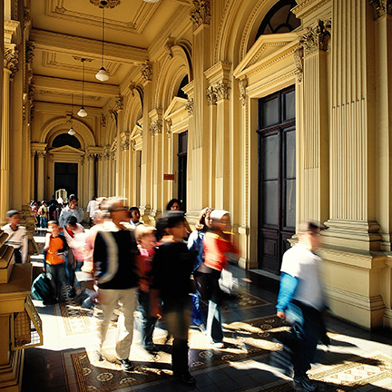

Visite

ATENÇÃO:
Devido à manutenção no revestimento da área dos elevadores e sanitários, o acesso aos pisos B, C e D (mirante), bem como aos sanitários do térreo e do piso A, está temporariamente restrito. Esta é uma medida preventiva para garantir a segurança de todos. Em breve, traremos mais informações.
Sentimos muito pelo inconveniente e agradecemos a compreensão.
• Caso a data esteja esgotada no link acima, compre diretamente na bilheteria, na data da visita. Temos cotas de ingressos para compras diretamente no Museu em todos os dias de funcionamento. Tal oferta é sujeita a disponibilidade, com possibilidade de esgotar em momentos de alta demanda.
• Horário de funcionamento: de terça a domingo, das 10 às 17h. Última entrada: 16h.
• Endereço: Rua dos Patriotas, 100 – Ipiranga – São Paulo/SP – CEP 04207-030.
• A bilheteria abre às 9h nos dias pagos e 10h nos dias de gratuidade (quarta-feira e primeiro domingo do mês).
• A tolerância para entrada é de 15 minutos.
• Não é possível alterar a data do ingresso. Para cancelamentos, reembolsos ou problemas no envio do ingresso, clique aqui
Dias gratuitos para todos os públicos
• O acesso é gratuito às quartas-feiras, no primeiro domingo de cada mês e nos feriados do aniversário de São Paulo (25/1) e da Independência (7/9).
• O ingresso deve ser retirado na bilheteria, na própria data, sem possibilidade de agendamento pelo site.
• Ingressos limitados, com possibilidade de esgotar em pouco tempo.
• Estamos com longas esperas para retirada dos ingressos nos dias gratuitos. Para conforto dos visitantes, recomendamos itens de proteção contra raios solares (protetores, chapéus, guarda sóis etc.)